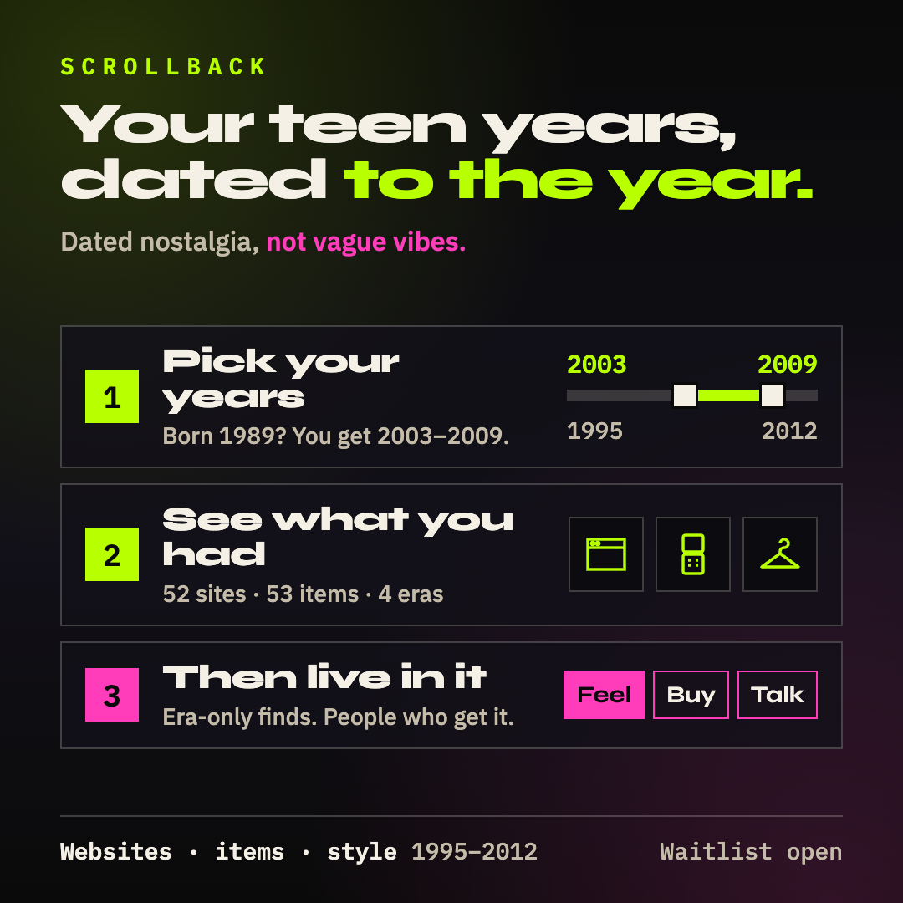
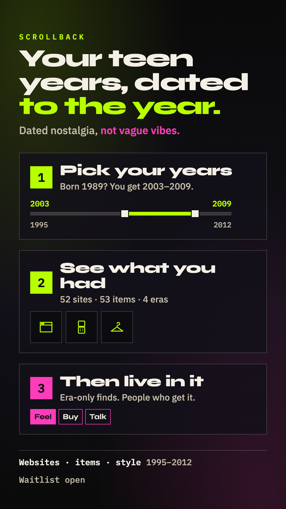
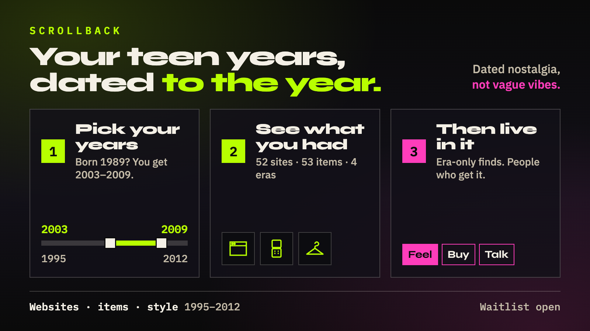
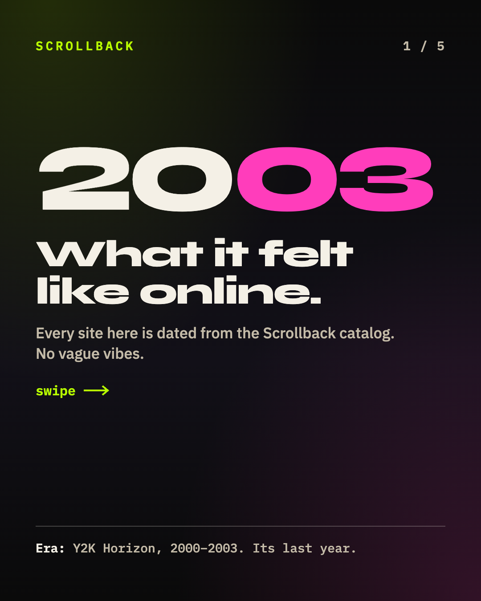
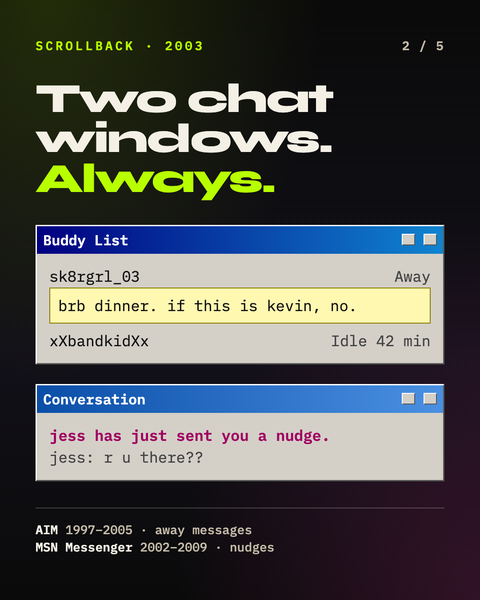
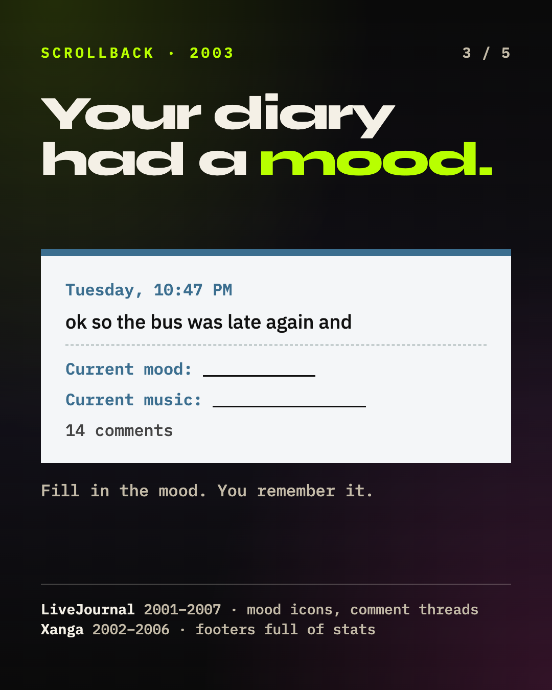
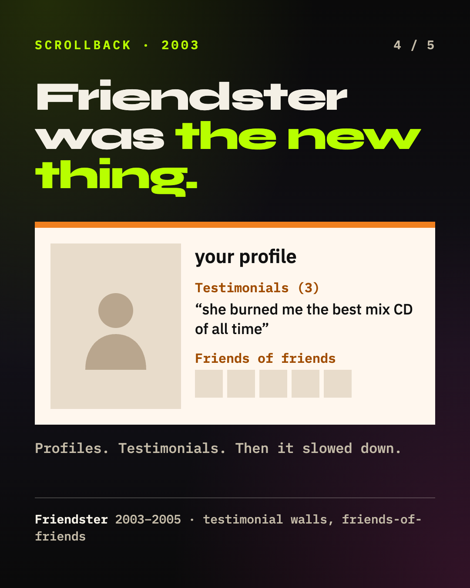
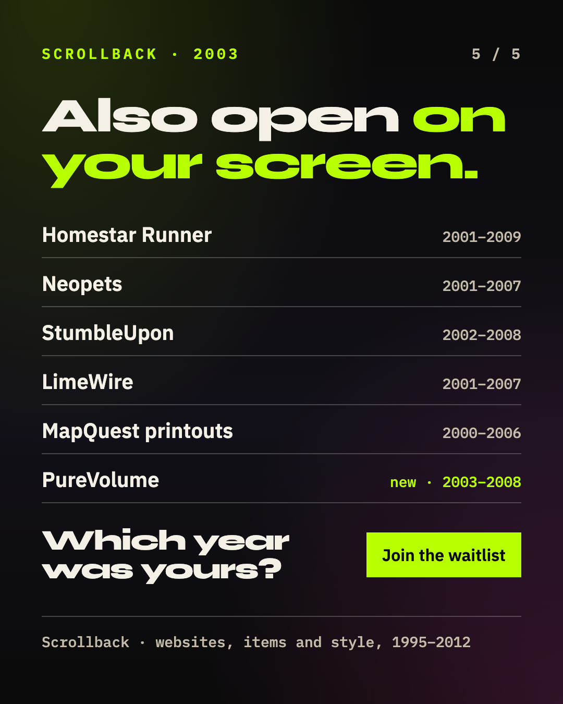

What 2003 felt like online, dated. AIM away messages, MSN nudges, a LiveJournal mood, and Friendster before it slowed down. Which year was yours? Waitlist link in bio.
Organic social · not paid ads
An explainer in three sizes, and a five-slide carousel built from dated catalog entries.
Pick your years → see what you had → feel, buy, talk. No price shown: none is set yet.



Five 1080×1350 slides. Every site carries its catalog years.





What 2003 felt like online, dated. AIM away messages, MSN nudges, a LiveJournal mood, and Friendster before it slowed down. Which year was yours? Waitlist link in bio.
Names are text only; windows and profiles are drawn, not screenshots or logos. Chat names and the testimonial are made-up examples.